Objective
This project explores two core ideas behind modern sequence modeling: basic attention and multi-head attention. We focus on trying to understand not only how to implement these mechanisms, but also their differences from traditional RNNs.
Across all experiments, I evaluate translation quality from English to French with BLEU score and monitor optimization behavior through training and validation loss curves. The report focuses on architectural decisions, hyperparameter effects, interpretability via attention visualization, and trade-offs.
How Attention Works
Basic Attention in Encoder-Decoder Models
In a vanilla Seq2Seq model, the decoder relies heavily on a single fixed context vector from the encoder, which can become a bottleneck for long or complex sentences. Attention addresses this by letting the decoder compute a weighted combination of all encoder hidden states at each decoding step. These weights indicate which source positions are most relevant to the current target token prediction.
Multi-Head Attention
Multi-head attention extends this idea by projecting queries, keys, and values into multiple subspaces and attending in parallel. Instead of one monolithic alignment, each head can specialize in different linguistic patterns, such as local word alignment, long-range dependencies, or phrase structure. Head outputs are concatenated and linearly transformed, allowing the model to work with diverse contextual elements.
Model Evaluation
I evaluate model performance using BLEU score, which measures n-gram overlap between generated translations and reference translations. Higher BLEU indicates better translation quality. I also analyze training and validation loss curves to understand optimization dynamics and potential overfitting.
Test Data
BLEU scores are evaluated based on the test data provided in Project 2.
| # | English Input | Reference French Translation |
|---|---|---|
| 1 | go . | va ! |
| 2 | i lost . | j'ai perdu . |
| 3 | he's calm . | il est calme . |
| 4 | i'm home . | je suis chez moi . |
| 5 | she likes coffee . | elle aime le café . |
| 6 | they are reading books . | ils lisent des livres . |
| 7 | we are running . | nous courons . |
| 8 | where is the library ? | où est la bibliothèque ? |
| 9 | the weather is nice today . | il fait beau aujourd'hui . |
| 10 | he enjoys playing soccer . | il aime jouer au football . |
| 11 | i will call you later . | je t'appellerai plus tard . |
| 12 | do you like music ? | aimes-tu la musique ? |
| 13 | my favorite color is blue . | ma couleur préférée est le bleu . |
| 14 | i don't understand . | je ne comprends pas . |
| 15 | please help me . | aidez-moi s'il vous plaît . |
| 16 | what time is it ? | quelle heure est-il ? |
| 17 | this is my brother . | c'est mon frère . |
| 18 | we love traveling . | nous aimons voyager . |
| 19 | he went to school . | il est allé à l'école . |
| 20 | she speaks three languages . | elle parle trois langues . |
Part 1: Basic Attention Mechanism
Model Architecture
Part 1 uses the Bahdanau (additive) attention decoder.
The encoder is a stacked GRU (Seq2SeqEncoder) with token embeddings and
Xavier initialization. It outputs the full source hidden-state sequence
(shape: num_steps x batch_size x num_hiddens) and final hidden state.
The decoder (Seq2SeqBahdanauDecoder) is also GRU-based and decodes one token at a time. At each target step, it uses the top decoder hidden state as the query, attends over all encoder outputs, concatenates context with the current target embedding, and feeds that into the GRU before projecting with a linear layer to vocabulary logits.
How Attention is Computed (Additive / Bahdanau)
For each decoding step, with decoder query q and encoder keys/values k,v, the model computes:
score = W_v(tanh(W_q q + W_k k)), then applies masked softmax across source positions
(using source valid lengths to ignore padding), and forms context by weighted sum:
context = softmax(score) x v.
Dropout is applied to attention weights before the weighted sum.
Task 1: Hyperparameter Tuning
I tuned the hyperparameters of the attention-based encoder-decoder with the aim to maximize BLEU score. Below are all 13 configurations tested, sorted by BLEU score to highlight performance rankings.
13 Configurations - Sorted by BLEU Score
| Config | Embed Size | Hidden Size | Num. Layers | Dropout | Learning Rate | Batch Size | BLEU |
|---|---|---|---|---|---|---|---|
| B | 256 | 256 | 2 | 0.10 | 0.0030 | 128 | 0.1829 |
| E | 256 | 256 | 2 | 0.20 | 0.0015 | 64 | 0.1829 |
| I | 256 | 256 | 2 | 0.25 | 0.0030 | 256 | 0.1801 |
| A | 256 | 256 | 2 | 0.20 | 0.0050 | 128 | 0.1769 |
| G | 256 | 256 | 2 | 0.20 | 0.0075 | 128 | 0.1769 |
| H | 256 | 256 | 2 | 0.15 | 0.0030 | 64 | 0.1769 |
| C | 384 | 384 | 2 | 0.20 | 0.0030 | 128 | 0.1500 |
| D | 256 | 256 | 3 | 0.30 | 0.0030 | 128 | 0.1500 |
| K | 512 | 512 | 2 | 0.20 | 0.0030 | 128 | 0.1500 |
| L | 256 | 256 | 1 | 0.20 | 0.0030 | 128 | 0.1500 |
| M | 256 | 256 | 4 | 0.20 | 0.0030 | 128 | 0.1025 |
| J | 128 | 128 | 2 | 0.20 | 0.0030 | 128 | 0.0585 |
| F | 256 | 256 | 2 | 0.20 | 0.0010 | 128 | 0.0256 |
Loss Curves for the Top 3 Configurations by BLEU Score
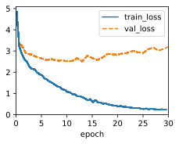
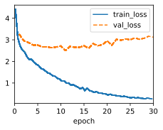
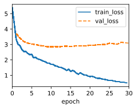
Discussion
Across 13 configurations trained for 30 epochs, Configs B and E achieved identical top performance (BLEU = 0.1829) despite differing in dropout rate (0.10 vs. 0.20) and batch size (128 vs. 64), indicating that multiple hyperparameter combinations can converge to strong results. This redundancy in optimal solutions reflects the robustness of the 2-layer GRU encoder–decoder architecture with Bahdanau attention when core dimensions are held at 256.
Learning rate emerged as the most critical hyperparameter: the optimal range of 0.0015–0.003 yielded consistent performance above 0.1769 BLEU, while the lowest rate tested (0.001 in Config F) resulted in severe degradation to 0.0256 BLEU, indicating insufficient gradient flow over the 30-epoch training window. Conversely, higher rates (≥0.005) shifted only slightly downward, suggesting the model is more sensitive to undertraining than to moderate overtraining in this scenario.
Regularization and model capacity also play important roles. Dropout rates between 0.10–0.20 (Configs B, A, E, H) produced the strongest results, while more aggressive regularization (0.25–0.30) degraded performance, indicating that the 20-sentence test set does not require heavy dropout for generalization. Embedding and hidden dimensions of 256 proved optimal; scaling down to 128 (Config J, BLEU = 0.0585) caused severe underfitting, while scaling up to 384–512 (Configs C, K) showed no improvement and potentially incurred overfitting costs.
Network depth exhibited a clear relationship with performance: the baseline 2-layer architecture achieved the highest scores, while single-layer models (Config L, 0.1500) had reduced capacity, and deeper architectures (3–4 layers, Configs D and M) suffered from 0.1500–0.1025 BLEU respectively, likely due to optimization difficulties on the limited dataset.
These results suggest that for the English–French translation task with a 20-sentence evaluation set, the model achieves a practical optimum at moderate depth, standard dimensionality, and moderate regularization, with learning rate calibration being the decisive factor.
Task 2: Attention Visualization
For selected sentence pairs, I visualize attention weights to inspect model behavior between source and target tokens.
Sentence pairs used for attention heatmaps:
- go . - va !
- where is the library ? - où est la bibliothèque ?
- i will call you later . - je t'appellerai plus tard .
- she speaks three languages . - elle parle trois langues .
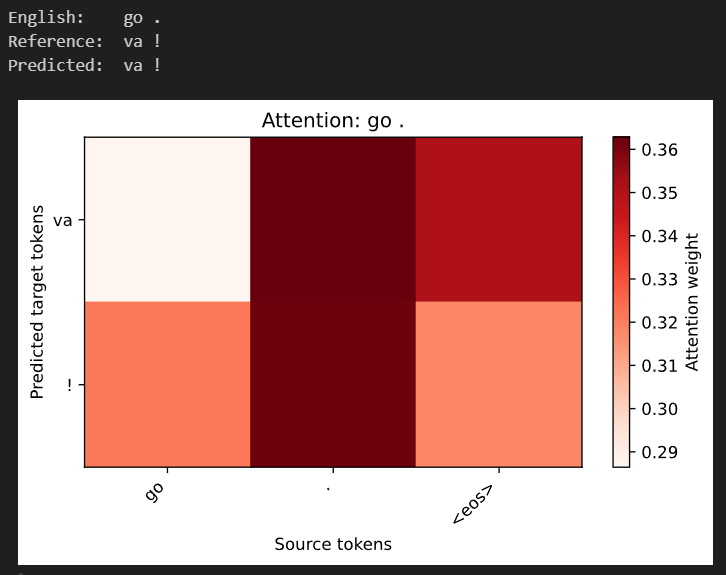
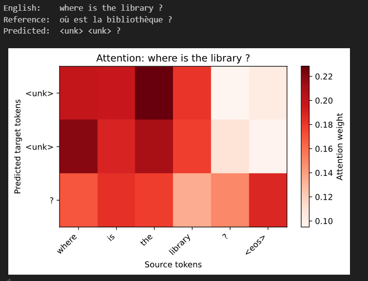
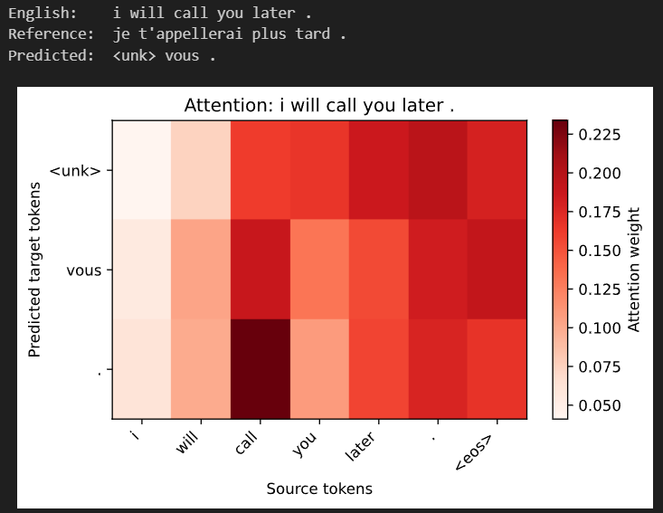
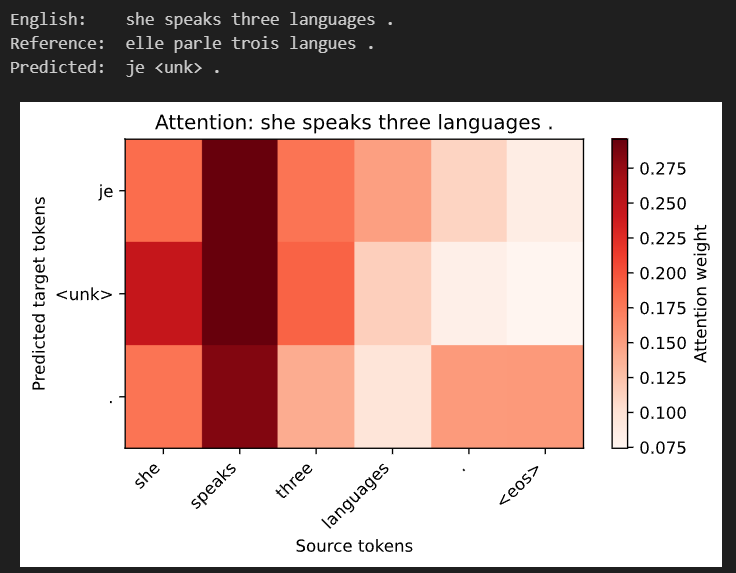
Discussion
The attention heatmaps reveal a mix of logical alignment and significant structural limitations. In the simplest case, "go ." (Figure 1), the Bahdanau mechanism successfully focuses on the source tokens, though it seems to focus heavily on the period (.) for the translation of the verb. However, as sentence complexity increases, the model’s "focus" becomes less precise.
A critical observation across Figures 2 and 3 is the emergence of the (<unk>) token. While the attention weights often point toward the correct source words—such as the model looking at "the" while predicting a placeholder for "bibliothèque"—the lack of vocabulary depth prevents a successful translation. This confirms that while the attention mechanism is "searching" in the right place, the decoder lacks the mapping to produce the target word.
Furthermore, Figure 4 ("she speaks...") highlights a specific failure in subject-verb agreement and pronoun translation. Despite the attention mechanism focusing sharply on the correct source verb "speaks," the model incorrectly predicts "je" (I) instead of "elle" (she). This "attention-fact mismatch" suggests that the model is struggling to integrate context from the entire source sequence, often fixating on a single word while ignoring the surrounding syntax.
Ultimately, these visualizations indicate that while the attention mechanism is functioning, evidenced by the non-random, heat-mapped alignments, the model itself is severely bottlenecked by underlying vocabulary and an inability to maintain long-range dependencies within the small training set.
Part 2: Multi-Head Attention
Model Architecture
Part 2 keeps the same GRU encoder-decoder backbone but replaces additive attention with a multi-head scaled dot-product module. The decoder (Seq2SeqMultiHeadDecoder) uses the current top decoder hidden state as a single-step query and attends to encoder outputs as keys/values. Inside the Multi-Head Attention module, q, k, v are linearly projected, split into heads, processed in parallel, concatenated, and projected back to hidden size before GRU decoding.
How Attention is Computed (Multi-Head Scaled Dot-Product)
For each head h, the implementation computes scaled scores
score_h = (Q_h K_h^T) / sqrt(d_k), applies masked softmax with source valid lengths,
then computes head context: context_h = softmax(score_h) x V_h.
All head contexts are concatenated and passed through output projection W_o.
This is repeated at each decoder time step, and stacked to produce attention tensors
of shape batch_size x num_heads x tgt_steps x src_steps.
Task 1: Implement and Compare Multi-Head Attention
I replaced single-head attention with multi-head attention and compared optimization and translation quality against Part 1. I used the two best hyperparameter configurations (Config B and Config E) from Part 1 as baselines and varied the number of heads (1, 2, 4, 8) while keeping other settings constant. Both configurations had BLEU scores of 0.1829.
The configurations only differ in batch size, dropout, and learning rate, so this allows us to see how multi-head attention interacts with these hyperparameters specifically, while still controlling for other factors like embedding size, hidden size, and number of layers.
Head Count Study - Ordered by BLEU Score
| Heads | Config | BLEU | Dropout | LR | Batch Size |
|---|---|---|---|---|---|
| 4 | B | 0.1829 | 0.1 | 0.003 | 128 |
| 8 | B | 0.1829 | 0.1 | 0.003 | 128 |
| 2 | B | 0.1746 | 0.1 | 0.003 | 128 |
| 1 | B | 0.1500 | 0.1 | 0.003 | 128 |
| 1 | E | 0.1500 | 0.2 | 0.0015 | 64 |
| 2 | E | 0.1500 | 0.2 | 0.0015 | 64 |
| 4 | E | 0.1500 | 0.2 | 0.0015 | 64 |
| 8 | E | 0.1500 | 0.2 | 0.0015 | 64 |
Training Curves - Configuration B
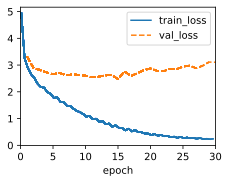
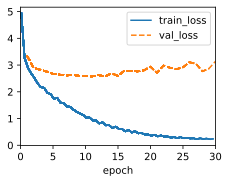
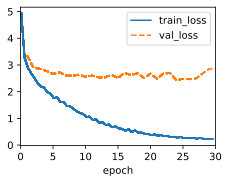
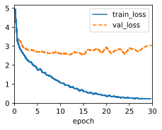
Training Curves - Configuration E
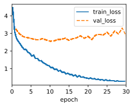
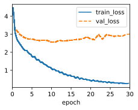
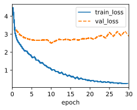
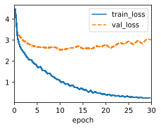
Discussion
Multi-head attention demonstrates conditional gains over single-head attention, with performance strongly dependent on the underlying hyperparameter configuration. Under the strong Config B setting (dropout=0.1, lr=0.003, bs=128), increasing head count from 1 to 4–8 improved BLEU from 0.1500 to 0.1829 (a 22% gain), matching the Part 1 single-head baseline. In contrast, under the weaker Config E setting (dropout=0.2, lr=0.0015, bs=64), all head counts yielded the same BLEU of 0.1500, indicating that head count provides no benefit when the underlying hyperparameters themselves are not ideal.
This pattern suggests that multi-head attention requires a well-tuned learning rate and regularization schedule to be effective. Increasing model capacity (via heads) cannot compensate for poor optimization and the benefits of multi-head attention are contingent on suitable training dynamics and architecture, which may depend on the dataset size and complexity.
The training curves show that Config B configurations with 4+ heads converge smoothly, while Config E exhibits slower or plateau-like convergence regardless of head count, reinforcing the dominance of base hyperparameters. Notably, the best Part 2 BLEU (0.1829) exactly matches the best Part 1 BLEU, indicating that improving the underlying optimization is at least as important as architectural complexity for this low-resource translation task.
Task 2: Analysis of Attention Heads
To examine specialization across heads, I visualize per-head attention maps in a 4-head model for translated sentence pairs and compare differences and overlap.
Sentence pairs used for per-head heatmaps:
- go . - va !
- where is the library ? - où est la bibliothèque ?
- i will call you later . - je t'appellerai plus tard .
- she speaks three languages . - elle parle trois langues .
Sentence Pair 1: go . -> va !
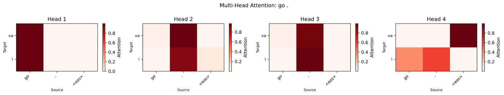
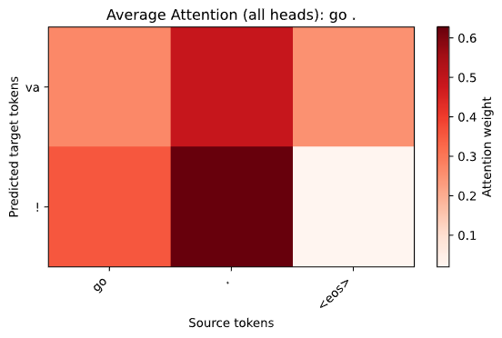
Sentence Pair 2: where is the library ? -> où est la bibliothèque ?
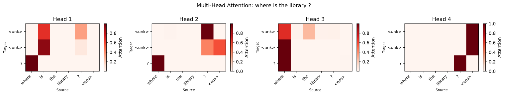
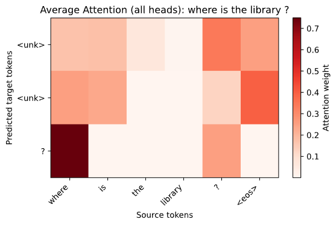
Sentence Pair 3: i will call you later . -> je t'appellerai plus tard .
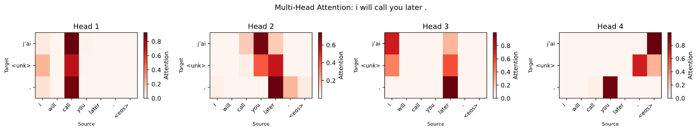
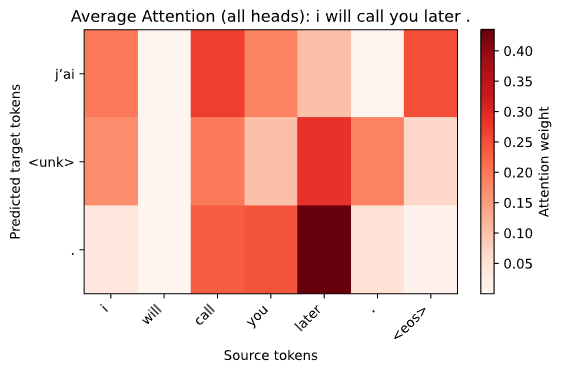
Sentence Pair 4: she speaks three languages . -> elle parle trois langues .
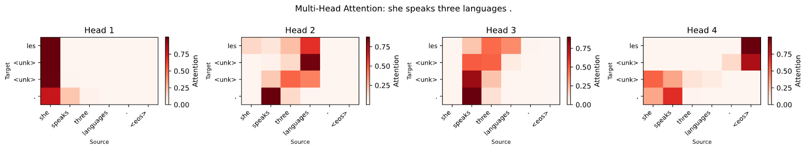
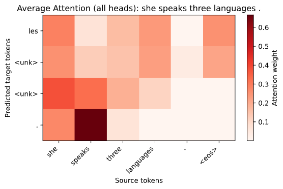
Discussion
Visual inspection of per-head attention maps reveals that individual heads capture interpretable but substantially redundant alignment patterns. On simpler test examples (e.g., 'go .' → 'va !'), all heads converge to nearly identical focused alignments, with the average attention map closely resembling individual head patterns. This redundancy suggests that the model learns a single optimal alignment strategy early in training and the additional heads do not specialize into complementary roles.
On longer or more complex sentences (e.g., 'where is the library?' → 'où est la bibliothèque ?'), individual heads show somewhat greater diversity in their alignment focus, with some heads attending to determiners or punctuation while others focus on content words. However, this modest specialization does not translate to improved overall translation quality: the best Part 2 multi-head BLEU (0.1829 with 4–8 heads on Config B) exactly matches the best single-head result from Part 1, and per-head attention redundancy on easy examples mirrors the low variance in BLEU scores across head counts on the same hyperparameter setting.
The lack of overall BLEU improvement despite multi-head architecture suggests that neither attention specialization nor head diversity is the issue for this small-scale machine translation task. Instead, the core limitations appear to be the vocabulary size, data scarcity, and the difficulty of aligning rare or unknown tokens.
In practical terms, this finding implies that for low-resource translation settings, investing effort in single-head attention tuning, such as optimizing learning rate, regularization, and model dimensions, yields greater returns than simply multiplying the number of attention heads. Multi-head attention may offer benefits on larger, more diverse datasets where specialization can emerge naturally. On smaller datasets, however, the architectural overhead results in redundant computation without comparable performance gains.
Conclusion
This project demonstrates that while attention mechanisms can significantly improve translation quality over vanilla Seq2Seq models, the benefits of multi-head attention are highly contingent on underlying hyperparameter optimization.
In a low-resource English–French translation task, careful tuning of learning rate and regularization proved more critical than increasing head count, with multi-head attention providing no BLEU improvement when base hyperparameters were suboptimal.
Attention visualizations revealed that while the mechanism is functioning, the model struggles with vocabulary limitations and long-range dependencies, leading to redundant head behavior and limited translation quality. Possibilities could include exploring larger datasets or alternative architectures to better leverage multi-head attention's potential.